Design system: from 0 to 89% team satisfaction
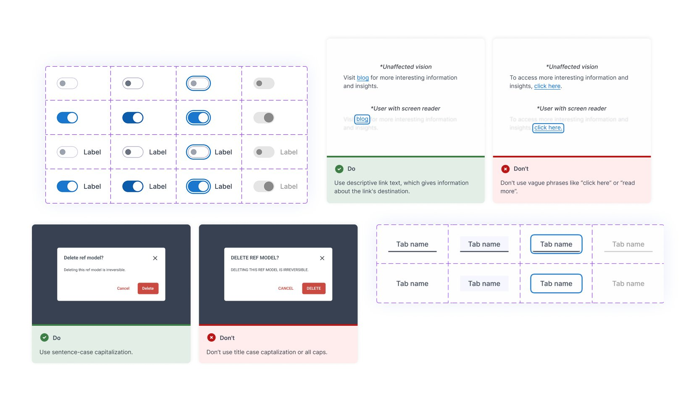
TL;DR
- I established core design system patterns with a focus on accessibility, consistency, and faster implementation.
- New design system improved development efficiency by 16% and raised the accessibility score to 61%.
- I introduced clearer documentation and shared standards, improving overall team satisfaction to 89% across design and engineering.
"TechMagic created a new complete design system for our product. Thanks to TechMagic, the product's UI became more intuitive based on quantitative usage data and customer feedback."
Xavery Lisinski, CEO at Elements.cloud
Context
Elements.cloud is a company that helps organizations manage Salesforce implementations and enterprise-wide change.
The main goal was to create a design system that enables the product team to work faster and produce a more consistent and accessible product (EAA).
Research
I conducted workshops with designers and developers to understand how the component library was used in daily workflows.
Developers often worked without direct design support, which led to design decisions being made independently.
To better understand the problem space, I conducted a design system inventory and accessibility audit (WCAG-EM).
The inconsistency problem
Different teams handled similar UI cases differently, creating duplicated logic and slowing development. Modal behaviors and accessibility handling varied across the platform, making implementation harder to scale.
The accessibility gap
The audit uncovered major accessibility issues that impacted usability and future WCAG compliance under the EAA, affecting not only UX but also the ability to sell the product to EU governmental organisations.
The documentation problem
Teams lacked practical guidance on how to use the design system effectively. The team needed clearer standards, examples, and shared ownership.
Metrics
After gaining a solid understanding of the problem space, we distilled our insights into three primary HMWs. We linked these questions with relevant metrics to define what success would look like.
Time-to-development
HMW create reusable and accessible patterns and components that reduce implementation time across teams?
Team satisfaction score
HMW provide documentation and shared standards so teams can work more confidently without direct design support?
Accessibility score
How might we improve accessibility coverage (WCAG 2.2 AA) by embedding standards and guidelines into the design system?
Accessibility documentation
I built our accessibility documentation around WCAG 2.2, I introduced visual do's and don'ts. Inspired by Primer and Goldman Sachs, I pushed it further, showing how people with different disabilities might experience those choices.
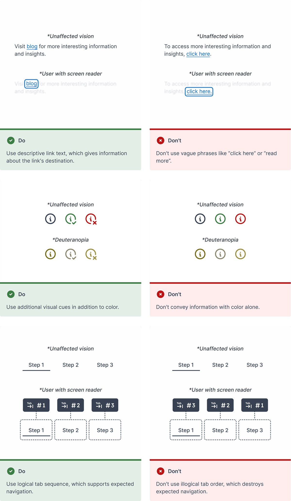
Color system and tokens
Inspired by SLDS and USWDS, I set up a color-grade tokens using "magic numbers". Since there wasn't a tool to generate palettes based on luminance ranges, I ended up vibecoding with AI my Magic Numbers Generator. Now anyone can use it to create accessible color palettes automatically.
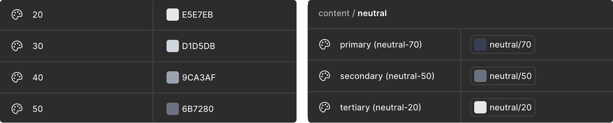
AI-integrated workflows
To streamline workflow, I vibecoded Figma plugins that helped validate text at an 8th-grade reading level, test components, and ensure text resizing.
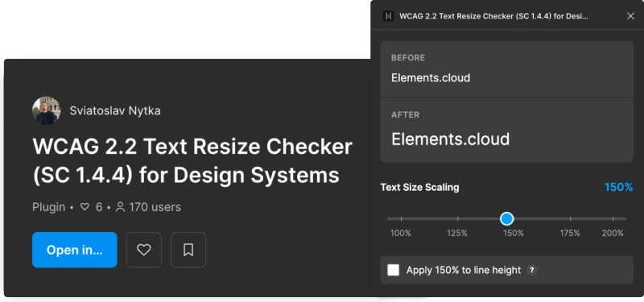
Accessibility as a culture
Docs and tools are great, but culture change happens when people get it. I started running accessibility sessions, to explain not just what we should do, but why it matters for product. Later, I even turned some of that content into a talk I gave at Kyiv Polytechnic Institute.
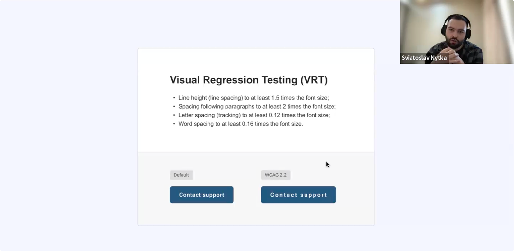
Voluntary Product Accessibility Template
The accessibility work concluded with a VPAT document, now provided to all government clients in Europe/UK to demonstrate our level of accessibility.
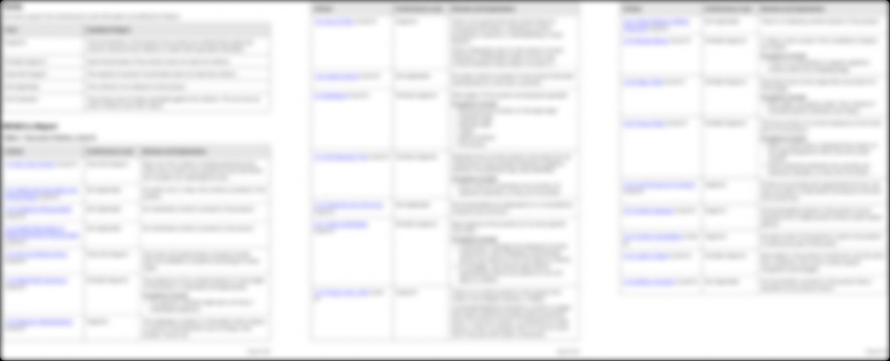
Patterns and components
In parallel with accessibility documentation, I started creating components and patterns with regular check-ins with the team.
Developers often hesitate between components like "spinner, skeleton, or loading page" or "checkbox or toggle", especially when working without designers. I ran a survey to identify the most common components and patterns where these decisions come up.
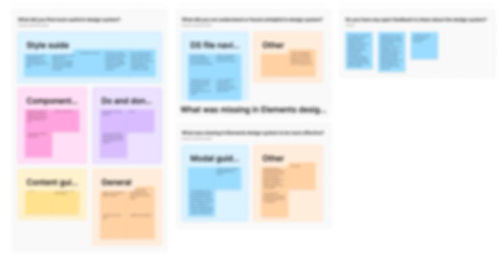
Decision tree approach
Inspired by the Oxygen Design System, I built decision trees to help developers self-serve and consistently choose components. A friend working there, David Brandau, confirmed it reduced time-to-development and improved satisfaction.
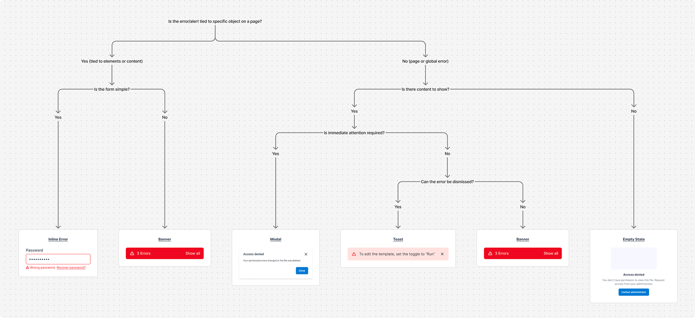
Modal patterns
Modals were a major challenge due to the large number of variants. I created visual do's and don'ts and integrated them into a checklist developers use during implementation.
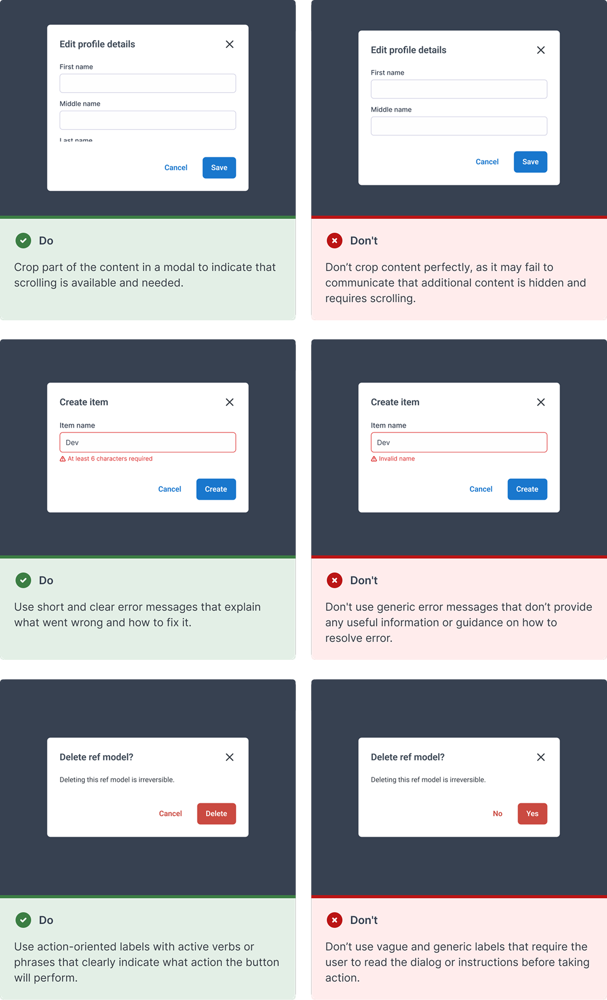
AI-integrated workflows
To speed up component documentation work, I created custom GPTs with our documentation requirements. For faster spec writing, I used EightShapes to generate the initial structure, then refined and added all necessary details manually.
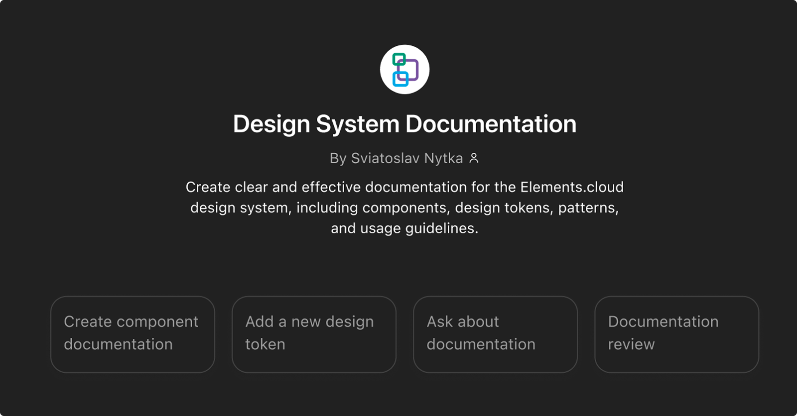
QuickStart
To avoid designers searching through hundreds of options, I introduced a "QuickStart" section with preconfigured components used most often, so they can be picked immediately.
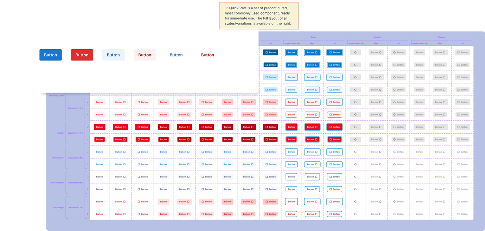
Design QA review
To ensure the highest fidelity between our DS and the final product, I made documentation for the design QA review process. This documentation served as a detailed guide for cross-referencing implemented, guaranteeing consistency.
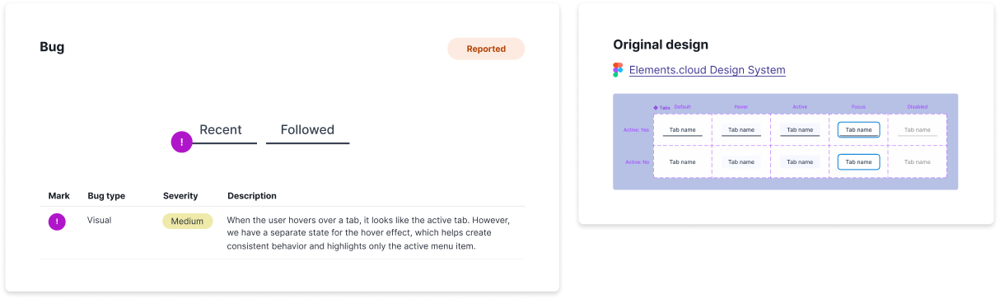
Impact
- Reduced time-to-development by -16% through reusable patterns and clearer standards
- Improved accessibility score to 61% (WCAG 2.2 AA) by fixing issues and documenting accessibility standards
- Increased team satisfaction to 89% by improving collaboration between design and engineering teams
"Using the Elements platform (with accessibility improvements) allows us to give comfort to our team."
Mike Page, B2B customer at LSE
Reflection
I closely collaborated with product managers and developers, which helped me better understand implementation details. I attended Into Design Systems twice, completing a Nielsen Norman Group course on "AI for Design Workflows", and extensively researching other systems. This work also expanded my network through collaboration with great people.
Simplifying document building with AI-powered features
This case study shows part of the work — for a full walkthrough or questions, contact Sviatoslav Nytka.